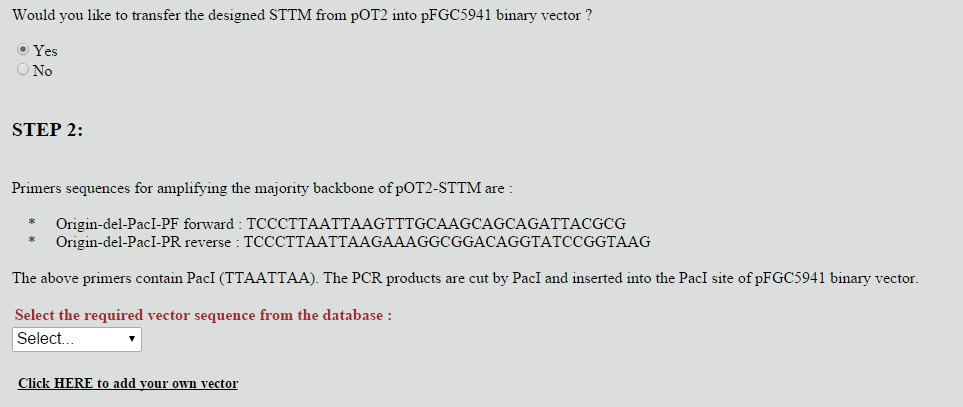
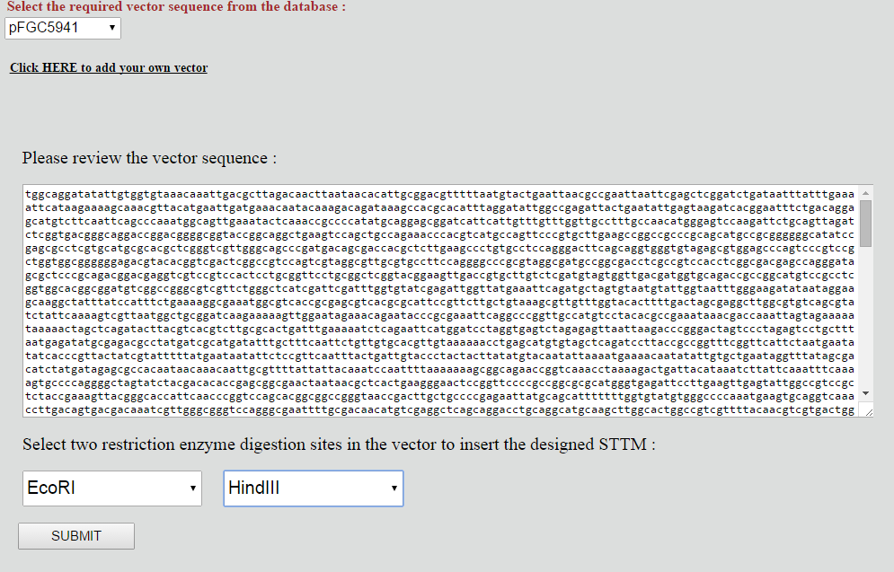
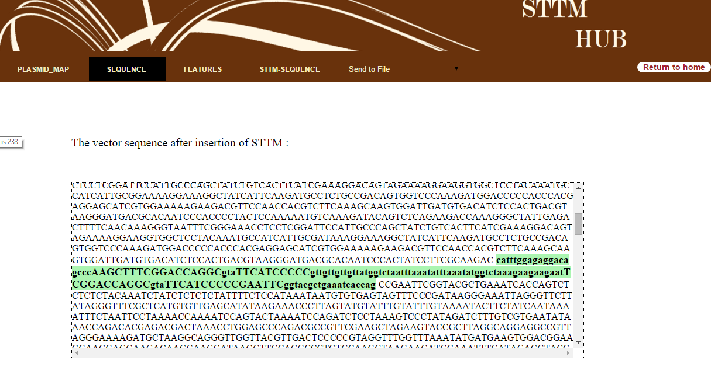
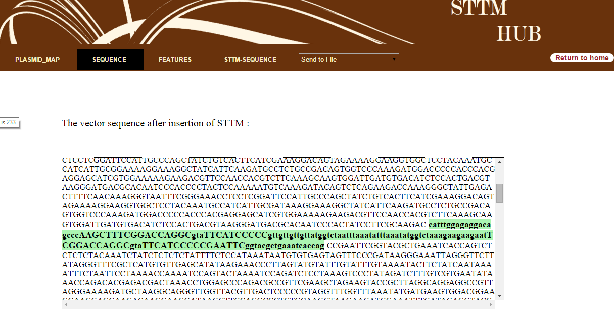

DOCUMENTATION
The Blossom STTM Hub is a tool which designs STTM sequences from miRNA and insert the designed STTM into the required DNA vectors to plot the plasmid map and to get the features and sequencing of the resulting vector. It also display the transgenic lines varying in different characteristics both genotypic and phenotypic. The species mainly under consideration here are rice, maize, arabidopsis and poplar. The customers can purchase the required vectors and plasmids after STTM modification by selecting from the transgenic lines display shown through the Michigan Tech Blossom STTM store.
 DESIGN_STTM
STEP 1:
DESIGN_STTM
STEP 1:
The STTM Hub application’s Design_STTM phase first accepts miRNA sequence along with a name from the user. Then, the user is given an option to select a DNA vector sequence from a plausible list. The application is automated to design the STTM sequence using the miRNA input provided by the user. The designed STTM is to be inserted into the DNA vector chosen. The user is then given an option whether to transfer the designed STTM into another binary vector. Based on the selection made, the user is made to proceed to STEP 2.
 STEP 2:
STEP 2:
If the designed sttm vector has to be transferred into another binary vector, the origin sequence must be removed from the initial DNA as the binary vector will also have an origin and the resultant DNA cannot have two origin sequences. The primers used to delete the origin segment are displayed and the user then has to select the binary vector, from a list of available vectors, to which the STTM needs to be transferred. A drop down menu is made available to do the same. In this step, the user can add their own binary vector sequence to which they can transfer the STTM. A link to add a new vector to their personal database is made available to fulfil this function.
Once the user selects their desired binary vector, the vector sequence dynamically loads and is displayed. Now, enzymes to be used as cutting sites are to be selected by the user. This is the last step before the plasmid map generation.
After all the inputs are provided, a validation check takes place, which verifies for the correctness of all the input sequences and selections. If everything is valid, the STTM Hub tool generates the plasmid map for the resulting vector containing the designed STTM sequence.
 PLASMID MAP GENERATION:The plasmid map is generated using HTML5 Canvas as the display interface and contains clean labels of all the features, enzymes and the STTM location along with their corresponding positions. Apart from the plasmid map, the resulting vector sequence is also displayed to the user highlighting the STTM sequence specially. A tabular listing of the features and their location in the vector is also displayed. The user is given an option of receiving the PDF report of the generated data through their registered email or other email address
 
